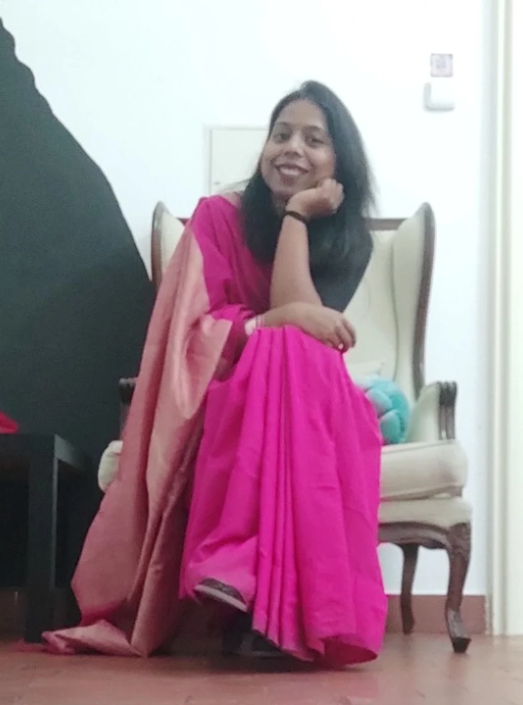
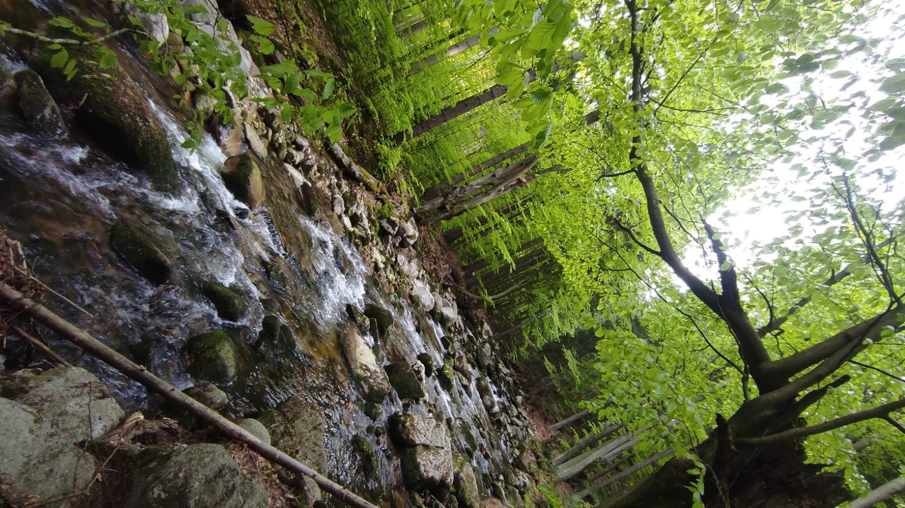

01
Algebraic logic
Exploring the algebraic structures behind logical systems, with a focus on quad algebras and double Stone algebras.
Structure & semanticsMathematical logic & beyond
Algebra. Logic. Connections.
I am Neha Gaur, a researcher in mathematical logic, with interests in algebraic logic, non-classical and many-valued logics, duality theory, and algebraic semantics.
My work explores the connections between algebraic structures and logical systems, with a particular focus on negation, four-valued logics, and categorical and topological representations.
Postdoctoral Researcher, TU WienInstitute of Logic and Computation · Vienna, Austria

An academic journey across
Banaras Hindu University Indian Statistical Institute TU Wien01 / Research interests
At the intersection of algebra and logic, I study how mathematical structures give meaning to logical systems.
Exploring the algebraic structures behind logical systems, with a focus on quad algebras and double Stone algebras.
Structure & semanticsStudying negation and many-valued systems, especially four-valued logics and their algebraic semantics.
Beyond true & falseConnecting algebraic, topological, and frame-theoretic perspectives through categorical representations.
Two perspectives, one theory02 / Publications
Studia Logica · Published online September 2025
Kumar, A., Dewan, B., & Gaur, N. (2025). Quad Rings, Quad Algebras and a 4-valued Logic. Studia Logica. https://doi.org/10.1007/s11225-025-10204-x
Journal of Logic and Computation · 35(4), exaf027
Kumar, A., Gaur, N., & Dewan, B. (2025). A categorical analysis of compatibility frames. Journal of Logic and Computation, 35(4), exaf027. https://doi.org/10.1093/logcom/exaf027
International Journal of Approximate Reasoning · 176, 109309
Kumar, A., Gaur, N., & Dewan, B. (2025). A 4-valued logic for double Stone algebras. International Journal of Approximate Reasoning, 176, 109309. https://doi.org/10.1016/j.ijar.2024.109309
Research preprint · Available through my ResearchGate profile
Research preprint · Available through my ResearchGate profile
Research preprint · Available through my ResearchGate profile
Paper links open the publisher's article page in a new tab; full-text access depends on the publisher. Preprint links open my ResearchGate profile in a new tab. For a complete academic record, download my CV
03 / Academic journey
From mathematics at Banaras Hindu University to research in Vienna, my work continues to explore the meeting points of logic and algebra.
View my full CVPhD, MathematicsBanaras Hindu University · 2026
MSc, MathematicsBanaras Hindu University · 2018
BSc, Mathematics, Physics & Defence StudiesDDU Gorakhpur University · 2015
September 2026 – February 2027
TU Wien Vienna, Austria
Theory and Logic Group, Institute of Logic and Computation. Hosted by Dr. Anela Lolic.
Ernst Mach Worldwide Grant (OeAD) and the FWF project “Skolemization and Equality” (opens in a new tab).
March – August 2026
Indian Statistical Institute Chennai, India
Research in the Computer Science Unit under Prof. Sujata Ghosh.
January 2020 – February 2026
Banaras Hindu University Varanasi, India
Department of Mathematics, under Dr. Arun Kumar. UGC Junior Research Fellow (2020–2022), Senior Research Fellow (2022–2025), and PhD Scholar (2025–2026).
04 / In conversation
Conference presentations and participation, research achievements, and contributions to the mathematics and logic community.
12th Conference on Topology, Algebra, and Categories in Logic
Kraków, Poland
Two contributed talks10th Women in Logic Workshop
Lisbon, Portugal
Contributed talk11th Indian School on Logic and its Applications
Krea University, India
Attendee9th Women in Logic Workshop
Birmingham, UK
Contributed short talk10th International Conference on Formal Structures for Computation and Deduction
Birmingham, UK
AttendeeIndian Women in Mathematics Annual Conference
IIT Patna, India
Paper presentationSzklarska Poręba, Poland
Paper presentation6th Asian Workshop on Philosophical Logic
Jadavpur University, Kolkata, India
Attendee11th Indian Conference on Logic and its Applications
ISI Kolkata, India
Poster27th International Conference on Theory and Applications of Satisfiability Testing
Pune, India
Attendee10th Indian Conference on Logic and its Applications
IIT Indore, India
Contributed talk9th Indian School on Logic and its Applications
IIT Kanpur, India
Contributed talk
A different kind of perspective
There is beauty
in the connections.
05 / Get in touch
For research conversations, academic enquiries,
or simply a shared interest in logic.
Institute of Logic and Computation
TU Wien · Vienna, Austria